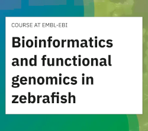

Here are links to some of the resources we've developed that others might find useful.
Bioinformatics and functional genomics in zebrafish

Since 2019 our group has been running a bioinformatics and functional genomics course in collaboration with EMBL-EBI and a range of data providers. The aim is to teach researchers how to carry out functional analysis and data visualisation of zebrafish RNA-seq data. All the material for the course is available on the EMBL-EBI website and all of our materials and data for the 2022 iteration are available from https://funcgen2022.buschlab.org/.
Baseline CompaRe
Baseline CompaRe is an R Shiny app designed to help with the analysis of E8.5-10.5 mouse transcriptomic data, particularly in cases where the embryos of interest are developmentally delayed. We have produced RNA-seq data for wild-type embryos for stages from 4 to 36 somites to form a baseline for comparison to experimental samples. This allows us to prioritise genes that are more likely to be differentially expressed due to the condition of interest, rather than due to developmental delay.